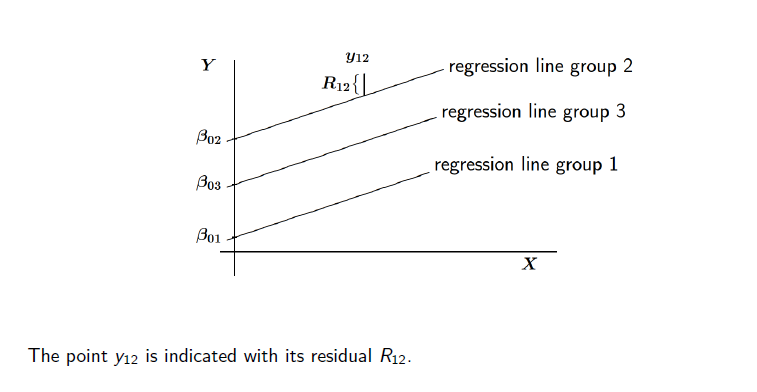
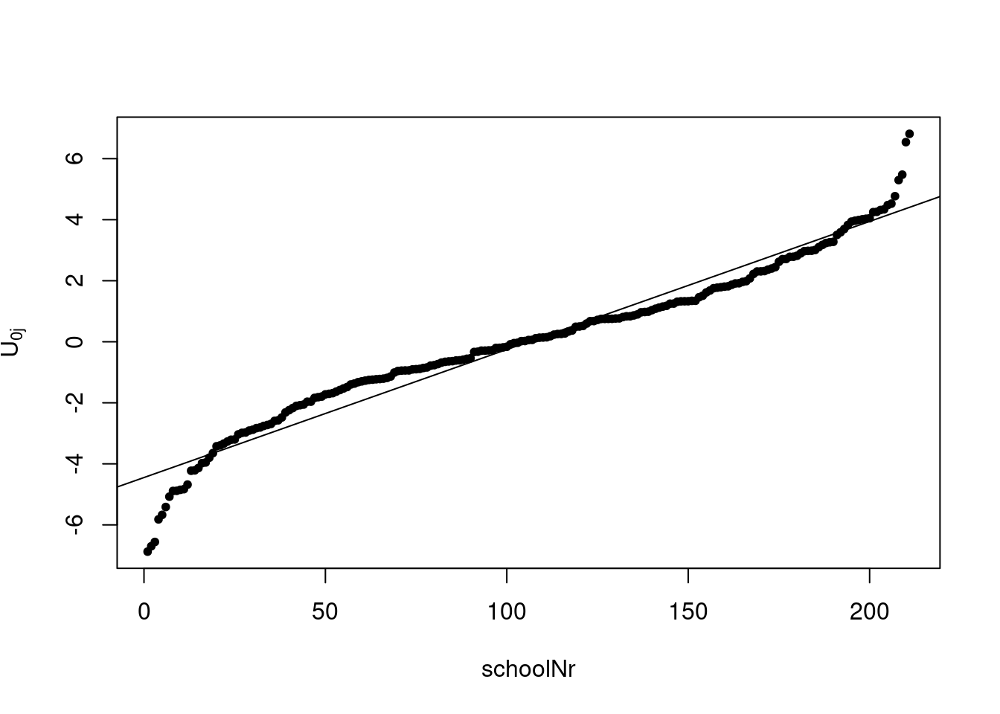

library(lme4)
library(lmerTest)
library(mitml)
library(sjlabelled)
library(tidyverse)
library(stargazer) ##comparing models
library(sjmisc)
library(lmerTest)
library(broom.mixed)
library(sjPlot)
library(glmmTMB)
library(stargazer)
library(modelsummary)2 Multilevel Data Modelling
Recommended literature:
Snijders, T. A., & Bosker, R. J. (2011). Multilevel analysis: An introduction to basic and advanced multilevel modeling. Sage.
2.1 Load libraries
2.2 Multi level issue
- Micro units are nested within macro units
- Micro units impact on macro units and vice versa
- Micro units within a macro unit tend to be more similar to each other as compared to other micro units in other macro units
- Observations are not any longer independent of each other
- In statistical analysis this impacts on their variances
- Neglecting this issue leads likely at least to wrong variance estimates, in the worst case to biased estimates
→ Multilevel analysis is a suitable approach to take into account the social contexts as well as the individual respondents or subjects.
2.2.0.1 Sampling
- Cluster sampling, multi-stage sampling are standard
- Secondary units are not selected independently of each other
- having selected the primary units increases the chance of sampling the secondary units → Ignoring may heavily impact on the variance estimates and may thus produce type I error (reject a true null hypothesis)
Two arguments for multilevel instead of single level regression of disaggregated data:
- Dependence as a nuisance:
- Standard errors and tests base on single-level regression are suspect because the assumption of independent residuals is invalid.
- Dependence as an interesting phenomenon:
- It is interesting in itself to disentangle variability at the various levels; moreover, this can give insight in the directions where further explanation may fruitfully be sought.
2.2.0.2 Modelling
Hierarchical linear model is a type of regression analysis for multilevel data where the dependent variable is at the lowest level.
- Explanatory variables can be defined at any level (including aggregates of level-one variables).
- Also longitudinal data can be regarded as a nested structure; for such data the hierarchical linear model is convenient as well (with some particularities).
2.2.1 Exercise
- Load library
library(lme4)
Already done, see Section 2.1.
- Load the data:
DAT <- read.csv2("data/1.Example.txt")- Have a look at the data
How many observations and variables?
str(DAT)'data.frame': 3454 obs. of 11 variables:
$ schoolnr : int 174 44 83 64 172 201 259 218 109 88 ...
$ pupilNR_new: int 2923 681 1332 1041 2879 3405 4207 3682 1719 1435 ...
$ langPOST : int 37 43 41 52 35 49 22 42 30 52 ...
$ ses : num -14.73 -2.73 -7.73 3.27 -2.73 ...
$ IQ_verb : num -2.87 -0.37 0.13 1.13 -2.37 2.63 0.63 -0.37 -4.87 1.63 ...
$ sex : int 0 1 0 0 1 0 0 1 1 1 ...
$ Minority : int 0 0 0 0 0 0 0 1 1 0 ...
$ denomina : int 5 3 5 1 2 3 1 3 1 2 ...
$ sch_ses : num -7.68 -8.98 5.75 3.23 -3.7 ...
$ sch_iqv : num 0.252 -0.742 0.503 0.252 -0.226 ...
$ sch_min : num 0 0.188 0 0.091 0 0.115 0.111 0.92 0.19 0 ...In the data set for each pupil is measured:
- which school he/she belongs to (schoolnr)
- what her/ his unique pupil number is (pupuilNR_new)
- what score the pupil reach in his/hers language test (our dependent variable) (langPOST)
- what its socio-economic background is (ses) - a binary variable that indicates the sex, if the pupil belongs to a minority (Minority) - the verbal IQ of the pupil, centered by the mean (IQ_verbal)
And the dataset contains measures for each school
- the schools socio-economic backgrounds (school_ses)
- the verbal IQ of all pupils in a school (school_iqv)
- an index how many pupils in a school belongs to a minority (school_min)
length(unique(DAT$pupilNR_new))[1] 34543454 observations = pupils 11 variables over all. Each pupil has a pupil number, that is unique and is assigned to one of 211 schools.
For overview let’s get some inside in the descriptives of each variable:
summary(DAT) schoolnr pupilNR_new langPOST ses
Min. : 1.0 Min. : 3 Min. : 8.00 Min. :-17.73000
1st Qu.: 69.0 1st Qu.:1130 1st Qu.:36.00 1st Qu.: -7.73000
Median :135.0 Median :2200 Median :42.00 Median : -1.73000
Mean :132.1 Mean :2171 Mean :41.32 Mean : 0.04678
3rd Qu.:189.0 3rd Qu.:3209 3rd Qu.:48.00 3rd Qu.: 8.27000
Max. :259.0 Max. :4214 Max. :58.00 Max. : 22.27000
IQ_verb sex Minority denomina
Min. :-7.87000 Min. :0.0000 Min. :0.00000 Min. :1.000
1st Qu.:-0.87000 1st Qu.:0.0000 1st Qu.:0.00000 1st Qu.:1.000
Median : 0.13000 Median :0.0000 Median :0.00000 Median :2.000
Mean : 0.03098 Mean :0.4896 Mean :0.04806 Mean :2.257
3rd Qu.: 1.13000 3rd Qu.:1.0000 3rd Qu.:0.00000 3rd Qu.:3.000
Max. : 6.63000 Max. :1.0000 Max. :1.00000 Max. :5.000
sch_ses sch_iqv sch_min
Min. :-17.72700 Min. :-4.8113 Min. :0.00000
1st Qu.: -4.38100 1st Qu.:-0.3668 1st Qu.:0.00000
Median : 0.13000 Median : 0.0932 Median :0.00000
Mean : 0.03116 Mean : 0.0127 Mean :0.05202
3rd Qu.: 4.43900 3rd Qu.: 0.4665 3rd Qu.:0.05900
Max. : 15.54500 Max. : 2.4769 Max. :0.92000 The schoolnr for the 211 schools ranges from 1 to 259.
table(is.na.data.frame(DAT))
FALSE
37994 No missing values in the data frame.
Get insight in the distribution of each variable:
hist(DAT$ses)hist(DAT$sch_ses)hist(DAT$IQ_verb)
hist(DAT$sch_iqv)hist(DAT$Minority)hist(DAT$sch_min)- ses is left scewed,more pupils have a lower ses than the mean,- this is not true for schools
- iqverb is slightly right scewed, range is wider on the negative site than on the possitve, this is also true for distribution of schools
- distribution for the mean IQ has more outliers on the negative side than on the positive side
- only under 10 percent of the pupils belongs to a minority, there are a lot schools where none of the pupils belongs to a minority group, while there are some schools, where all pupils belongs to a minority.
2.3 Random Intercept Model (RIM) or Random Effects Model
- \(i\) indicates the individual level-one unit
- \(j\) indicates the group, level two unit
- variables for individual \(i\) in group \(j\):
- \(Y_{ij}\)
- \(x_{ij}\) explanatory variable at level one
- for group \(j\)
- \(z_j\) explanatory at level two
- \(n_j\) group size
OLS regression model of \(Y\) on \(x\) ignoring groups
\[ Y_{ij} = \beta_0 + \beta_1x_{ij}+ R_{ij} \]
\(R_{ij}\) is not the error term, it is the residual term: An error term is generally unobservable and a residual is observable and calculable, making it much easier to quantify and visualize. In effect, while an error term represents the way observed data differs from the actual population, a residual represents the way observed data differs from sample population data.
group dependent regression model is dependent on groups, the following notation means, that the units on level 2 (indivudals) have random intercepts
\[ Y_ij = \beta_{0j} + \beta_{1j}x_{ij}+ R_{ij} \]
In the random intercept model, the intercepts \(\beta_{0j}\) are random variables representing random differences between groups, where \(\beta_{0j} =\) average intercept \(\gamma00\) (for all level two units) plus group-dependent deviation \(U_{0j}\)
\[ \beta_{0j} = \gamma_{00} + U_{0j} \]
In this model, the regression coefficient \(β_1\) is common to all the groups (otherwise random slope model)
In a fixed effects model each group has own intercept \(\beta_{0j}\) to be estimated, because \(\beta_{0j} =\) is not a random variable.
In the random intercept model, the constant regression coefficient \(β_1\) is sometimes denoted \(\gamma_{10}\) →
\[
Y_{ij} = \gamma_{00} + \gamma_{10}x_{ij}+U_{0j}+ R{ij}
\]
In the hierarchical linear model, the \(U_{0j}\) are random variables. The model assumption is that they are independent, normally distributed with expected value \(0\), and variance from
\[ \tau^2 = var(U_{0j}) \]
The statistical parameter in the model is not their individual values, but their variance \(tau^2\). \(U_{0j}\) represent the random intercept for each cluster. It’s really a residual term that measures the distance from each subject’s intercept around the overall intercept \(β_0\). Rather than calculate an estimate for every one of those distances, the model is able to just estimate a single variance. This is the between group variance.
The within-group variance is measured by the variance of residuals. Their sum is the total variance in \(Y\) that is not explained by \(X\).

2.3.1 Fixed or Random Effects for Groups?
Arguments for choosing between fixed (F) and random (R) coefficient models for the group dummies:
- If groups are unique entities and inference should focus on these groups: F. This often is the case with a small number of groups. $rarr; good for countries
- If groups are regarded as sample from a (perhaps hypothetical) population and inference should focus on this population: R This often is the case with a large number of groups.
- If group sizes are small and there are many groups, and it is reasonable to assume exchangeability of group-level residuals, then R makes better use of the data.
- If the researcher is interested only in within-group effects, and is suspicious about the model for between-group differences, then F is more robust.
- In groups we need enough variance and distribution
- If group effects \(U_{0j}\) (etc.) are not nearly normally distributed, R is risky (or use more complicated multilevel models).
A fixed effect and a random effect are two different statistical models used in data analysis, including in the context of meta-analysis and regression analysis. Here is a brief explanation of each:
2.3.1.1 Fixed Effect:
In a fixed effect model, the assumption is that the effects being studied are constant across all levels of the categorical variable(s) being considered. It assumes that the observed differences are due to the characteristics of the entities being studied, rather than being random or varying across different groups. In a fixed effect model, the parameters being estimated are specific to the entities or groups being analyzed. The fixed effect model is appropriate when the goal is to estimate the specific effects of each entity or group and to make inferences about those specific entities or groups. helen says
2.3.1.2 Random Effect:
In a random effect model, the assumption is that the effects being studied are not constant across all levels of the categorical variable(s) being considered. It assumes that the observed differences are due to a combination of the characteristics of the entities being studied and random variation. In a random effect model, the parameters being estimated represent the average effects across all entities or groups being analyzed, as well as the variability between entities or groups. The random effect model is appropriate when the goal is to estimate the average effects across all entities or groups and to make inferences about the population of entities or groups. It is important to choose the appropriate model based on the research question and the characteristics of the data. The choice between fixed effect and random effect models depends on the underlying assumptions and the goals of the analysis.
Here are some additional resources that may be helpful: pubmed.ncbi.nlm.nih.gov A basic introduction to fixed-effect and random-effects models … - PubMed PMID: 26061376 DOI: 10.1002/jrsm.12 Abstract There are two popular statistical models for meta-analysis, the fixed-effect model and the random-effects model…
2.3.2 Intraclass Correlation Coefficent
To deduce if multi-level is necessary & appropriate use the intraclass correlation coefficient.
If their is no correlation among the observations within a cluster, cluster means won’t differ (no between-group variance)
Start with the empty model (random effects ANOVA) is a model without explanatory variables:
\[ Y_{ij} = \gamma_{00} + U_{0j} + R_{ij} \]
Variance decomposition:
\[ var (Y_{ij}) = var (U_{0j}) + var (R_{ij}) =\tau^2 + \sigma^2 \]
Can the covariates on individual level be explained by the group j? Check for intraclass correlation coefficient (ICC). The ratio of the between-cluster variance to the total variance is called the Intraclass Correlation. If the correlation is zero, then nothing of the variance comes in addition.
- Covariance between two individuals (i ̸= k) in the same group j :
\[ cov(Y_{ij} ,Y_{kj}) = var(U_{0j}) = \tau^2 \]
And their correlation with the intraclass correlation coefficient (ICC).
\[ ρ(Y_{ij} ,Y_{kj}) = ρ(Y) =\frac{\tau^2}{\tau^2 + \sigma^2} \]
It is the proportion what is left unexplained in only looking at the single level. The higher the covariance is, the more multi level analysis is appropriate and can give explanation. The higher the difference between the classes, the higher is the intraclass correlation coefficient. → what are the threshold values indicating an RIM oder random coefficent model?
- Often between 0.05 and 0.25 in social science research, where the groups represent some kind of social grouping.
2.3.3 Exercise
- micro units: 3454 pupils
- macro units: 211 schools
- Y is a language test langPost
- Estimate empty model:
mod1 <- lmerTest::lmer(langPOST #dependent variable
~ (1|schoolnr), #independent variable & random effect is in this case the school number
data = DAT, #data
REML = TRUE) # a robust estimator
summary(mod1) #get summaryLinear mixed model fit by REML. t-tests use Satterthwaite's method [
lmerModLmerTest]
Formula: langPOST ~ (1 | schoolnr)
Data: DAT
REML criterion at convergence: 24482.5
Scaled residuals:
Min 1Q Median 3Q Max
-4.0887 -0.6236 0.0769 0.7279 2.5470
Random effects:
Groups Name Variance Std.Dev.
schoolnr (Intercept) 18.78 4.333
Residual 63.20 7.950
Number of obs: 3454, groups: schoolnr, 211
Fixed effects:
Estimate Std. Error df t value Pr(>|t|)
(Intercept) 40.9224 0.3325 192.7084 123.1 <2e-16 ***
---
Signif. codes: 0 '***' 0.001 '**' 0.01 '*' 0.05 '.' 0.1 ' ' 1fixef(mod1) # only fixed effects(Intercept)
40.9224 confint(mod1) # for confindence intervalsComputing profile confidence intervals ... 2.5 % 97.5 %
.sig01 3.821700 4.889329
.sigma 7.759807 8.147763
(Intercept) 40.266476 41.574208.sig01 stands for \(\tau^2\) → does not be centered around zero, like expected. .sigma stands for \(\sigma^2\)
REML stands for restricted maximum likelihood method. LMER uses this because numerically fitting a mixed-effects model can be difficult and the maximum likelihood approach often fails.
The empty model shows, how the language test results differ between the schools. It is the estimated true group mean. Overall we have an estimate of 40.9224. The residual variance on the school level is 18.78 (variance), the one on the individual level is 63.20.
- Derive the ICC from the output. Assess whether it is really necessary to use a multi-level model for analyzing this data set.
- \(\tau^2\), is the variance of \(U_{0j} = 18.78\)
- \(\sigma^2\) is the variance of the residual \(R_{ij} = 63.2\)
18.78 / (18.78 + 63.2)[1] 0.2290803Because ICC is between 0.05 and 0.25 an RIM is appropriate. It indicates, that there is a variance, that can be explained by schools → a between-group variance.
- What is the estimated mean of the total population of individual values \(Y_{ij}\) and the corresponding standard deviation?
The estimated mean of the total population is 40.9224 (see the summmary of mod1, fixed effects and the intercept) with a standard error 0.3325.
The standard deviation is for this total population is
#Multiply the mean SE (derived from the fixed effects, SE for the intercept) with the square root of the sample size.
0.3325 * (sqrt(3454))[1] 19.54127- What is the estimated mean of the population of class means \(\beta_{0j}\) and the corresponding standard deviation?
In this model no difference expected, because is the same, variance should be explained on the individual level
2.3.4 Adding Covariates
The model becomes more interesting, when also fixed effects of explanatory variables are included:
\[ Y_{ij} = γ_{00} + γ_10x_{ij} + U_{0j} + R_{ij} \]
Note the difference between fixed effects of explanatory variables and fixed effects of group dummies.
There are two kinds of parameters: 1. fixed effects: regression coefficients γ (just like in OLS regression) 2. random effects: \(U_{0j}\) determined by variance component \(\tau_0^2\)
2.3.5 Exercise
- Add the covariate for IQ into the model on micro-level, linear model without multi-level
mod2 <- lm(langPOST ~ IQ_verb, data=DAT) #independent micro variable
summary(mod2)
Call:
lm(formula = langPOST ~ IQ_verb, data = DAT)
Residuals:
Min 1Q Median 3Q Max
-29.2571 -4.5436 0.6551 5.0996 25.9592
Coefficients:
Estimate Std. Error t value Pr(>|t|)
(Intercept) 41.23512 0.12120 340.21 <2e-16 ***
IQ_verb 2.64326 0.05928 44.59 <2e-16 ***
---
Signif. codes: 0 '***' 0.001 '**' 0.01 '*' 0.05 '.' 0.1 ' ' 1
Residual standard error: 7.122 on 3452 degrees of freedom
Multiple R-squared: 0.3654, Adjusted R-squared: 0.3652
F-statistic: 1988 on 1 and 3452 DF, p-value: < 2.2e-16- Estimate also a multi-level model (RIM), and compare both. Discuss!
mod3 <- lmer(langPOST ~ IQ_verb + (1|schoolnr), data=DAT)
summary(mod3)Linear mixed model fit by REML. t-tests use Satterthwaite's method [
lmerModLmerTest]
Formula: langPOST ~ IQ_verb + (1 | schoolnr)
Data: DAT
REML criterion at convergence: 22972.9
Scaled residuals:
Min 1Q Median 3Q Max
-4.1563 -0.6283 0.0789 0.7130 3.1760
Random effects:
Groups Name Variance Std.Dev.
schoolnr (Intercept) 10.22 3.197
Residual 41.14 6.414
Number of obs: 3454, groups: schoolnr, 211
Fixed effects:
Estimate Std. Error df t value Pr(>|t|)
(Intercept) 4.099e+01 2.497e-01 1.980e+02 164.13 <2e-16 ***
IQ_verb 2.497e+00 5.725e-02 3.432e+03 43.61 <2e-16 ***
---
Signif. codes: 0 '***' 0.001 '**' 0.01 '*' 0.05 '.' 0.1 ' ' 1
Correlation of Fixed Effects:
(Intr)
IQ_verb 0.004 We can see, the model gives more explanation, if we used the linear mixed-effects model 3. The variance in model 3 for between group and within group is much more smaller than in model 1. The scaled residuals in model 3 are in an less expanded range, than the residuals in model 2, that indicates a better model fit.
sigma(mod2)[1] 7.122464sigma(mod3)[1] 6.413664?sigmaHelp on topic 'sigma' was found in the following packages:
Package Library
glmmTMB /home/runner/work/_temp/renv/cache/v5/R-4.3/x86_64-pc-linux-gnu/glmmTMB/1.1.10/09c1a82cf7f80e2289aaf8267345dfd1
lme4 /home/runner/work/_temp/renv/cache/v5/R-4.3/x86_64-pc-linux-gnu/lme4/1.1-35.5/16a08fc75007da0d08e0c0388c7c33e6
stats /opt/R/4.3.1/lib/R/library
Using the first match ...In addition the overall variance is decreasing, too.
2.3.5.1 More Covariates
The model becomes more interesting, when also fixed effects of explanatory variables are included:
\[ Y_{ij} = γ_{00} \\ + γ_{10}x_{1ij} + . . . + γ_{p0}x_{pij} \\ + γ_{01z1j} + . . . + γ_{0qzqj}\\ + U_{0j} + R_{ij}\\ \]
- \(γ_00\) is zero
- \(+ γ_10x1ij + . . . + γp0xpij\) within-group (micro units) differences, for individual variable 1 you have a covariate for the unit belonging to a group. For variable \(p\) you have also a covariate for the unit belonging to a group
- \(+ γ_01z1j + . . . + γ_0qzqj\) all the between groups (macro units) coefficients,for group variable 1 you have a covariate for the unit belonging to a group. For variable p you have also a covariate for the unit belonging to a group
2.3.6 Between- / Within-Groups
What difference you are interested in?
Difference between within-group and between-group regressions:
- The within-group regression coefficient (\(+ γ_10x1ij + . . . + γp_0xpij\)) is the regression coefficient within each group, assumed to be the same across the groups. → \(\sigma^2\)
- The between-group regression coefficient (\(+ γ_01z1j + . . . + γ_0qzqj\)) is defined as the regression coefficient for the regression of the group means of \(Y\) on the group means of \(X\).→ \(\tau^2\)
- This distinction is essential to avoid ecological fallacies → if you ignore, what happen on the lowest level, you will make ecological fallacies
2.3.7 Ecological fallacy
(also ecological inference fallacy or population fallacy) is a formal fallacy in the interpretation of statistical data that occurs when inferences about the nature of individuals are deduced from inferences about the group to which those individuals belong.
- Example: Inference and generalization mistake: All the French eat snails, what is obviously not true
4 types:
- confusion between ecological (population) correlations and individual correlations
- confusion between group average and total average
- Simpson’s paradox: as Simpson-Paradoxon (auch simpsonsches Paradoxon oder Simpson’sches Paradoxon, benannt nach Edward Hugh Simpson) ist ein Paradoxon aus der Statistik. Dabei scheint es, dass die Bewertung verschiedener Gruppen unterschiedlich ausfällt, je nachdem ob man die Ergebnisse der Gruppen kombiniert oder nicht. Dieses Phänomen tritt auf, wenn Störvariablen in der statistischen Analyse nicht betrachtet werden. Durch die Nichtbeachtung der Gruppen kommt es zu einer Scheinkorrelation.
- confusion between higher average and higher likelihood
In the model with separate effects for the original variable \(x_{ij}\) and the group mean
\[ Yij = \tilde{y}_{00} + \tilde{y}_{10}\hat{x}_{ij} + \tilde{y}_{01}\hat{x.}_j + U_{0j} + R_{ij} \]
- the within-group regression coefficient is \(γ_{10}\)
- between-group regression coefficient is \(γ_{10} + γ_{01}\)
Test difference between within-group and between-group coefficients: consider \(\tilde{γ}_{10}= y_{10}, \tilde{γ}_{01} = y_{10} + y_{01}\)
Both models are equivalent, and have the same fit:
\[ \tilde{γ}_{10} = γ_{10}, \tilde{γ}_{01} = γ_{10} + γ_{01} \]
2.3.8 Model fit with R squares
\(R^2\) = 1- (unexplained variance / total variance)
multilevelR2(mod3, print = c("RB1", "RB2", "SB", "MVP")) RB1 RB2 SB MVP
0.3491123 0.4556720 0.3735188 0.3365584 - RB1 and RB2 returns the explained variance at level 1 and level 2, respectively, according to Raudenbush and Bryk (2002, pp. 74 and 79)
- Specifying SB returns the total variance explained according to Snijders and Bosker (2012, p. 112).
- Specifying MVP returns the total variance explained based on “multilevel variance partitioning” as proposed by LaHuis, Hartman, Hakoyama, and Clark (2014).
But note: Don’t infer from \(R^2\) if multi level should be used or not! Use the ICC for that
2.3.9 Exercise
- Add a group level effect for IQ using the R commands
groupM <- aggregate(DAT$IQ_verb, by=list(DAT$schoolnr), FUN=mean)
colnames(groupM) <- c("schoolnr", "IQ_mean")
DAT <- merge(DAT, groupM, by="schoolnr", all.x = TRUE)With this command we add a group mean for the verbal IQ per school. With this group mean we separate the effects from each other, So we have the intercept for the school & the verbal IQ mean in school for explaining the between group variance and for the within group variance the verbal IQ
- Compare the RIM model with and without this group level variable, with a special focus on the level-2 variance. Explain!
mod4 <- lmer(langPOST ~ IQ_verb + IQ_mean + (1|schoolnr), data=DAT)
summary(mod3)Linear mixed model fit by REML. t-tests use Satterthwaite's method [
lmerModLmerTest]
Formula: langPOST ~ IQ_verb + (1 | schoolnr)
Data: DAT
REML criterion at convergence: 22972.9
Scaled residuals:
Min 1Q Median 3Q Max
-4.1563 -0.6283 0.0789 0.7130 3.1760
Random effects:
Groups Name Variance Std.Dev.
schoolnr (Intercept) 10.22 3.197
Residual 41.14 6.414
Number of obs: 3454, groups: schoolnr, 211
Fixed effects:
Estimate Std. Error df t value Pr(>|t|)
(Intercept) 4.099e+01 2.497e-01 1.980e+02 164.13 <2e-16 ***
IQ_verb 2.497e+00 5.725e-02 3.432e+03 43.61 <2e-16 ***
---
Signif. codes: 0 '***' 0.001 '**' 0.01 '*' 0.05 '.' 0.1 ' ' 1
Correlation of Fixed Effects:
(Intr)
IQ_verb 0.004 summary(mod4)Linear mixed model fit by REML. t-tests use Satterthwaite's method [
lmerModLmerTest]
Formula: langPOST ~ IQ_verb + IQ_mean + (1 | schoolnr)
Data: DAT
REML criterion at convergence: 22951.2
Scaled residuals:
Min 1Q Median 3Q Max
-4.1741 -0.6263 0.0696 0.7037 3.1791
Random effects:
Groups Name Variance Std.Dev.
schoolnr (Intercept) 9.119 3.020
Residual 41.096 6.411
Number of obs: 3454, groups: schoolnr, 211
Fixed effects:
Estimate Std. Error df t value Pr(>|t|)
(Intercept) 4.102e+01 2.389e-01 2.012e+02 171.677 < 2e-16 ***
IQ_verb 2.438e+00 5.857e-02 3.240e+03 41.634 < 2e-16 ***
IQ_mean 1.275e+00 2.641e-01 2.616e+02 4.827 2.36e-06 ***
---
Signif. codes: 0 '***' 0.001 '**' 0.01 '*' 0.05 '.' 0.1 ' ' 1
Correlation of Fixed Effects:
(Intr) IQ_vrb
IQ_verb 0.000
IQ_mean 0.018 -0.222Model 1 (empty model with classes fixed), Model 2 (+ individual intelligence score), Model 3 (+group mean of intelligence score). → more explanation, group mean is significant!
sigma(mod3)[1] 6.413664sigma(mod4)[1] 6.410607The variance in the random effects between model 3 and 4 is decreasing and more is explained. In mod4 the variance of the residuals and the residual standard deviation is decreasing. Also standard errors are slightly decreasing.
2.4 Prediction on Random Effects
only possible after model computation, because only then we have the estimates, we can predict from!
The random effects \(U_{0j}\) are not statistical parameters and therefore they are not estimated as part of the estimation routine. However, sometimes it might be necessary to predict them.
Note: It is often not a good idea, because their are predicted, not statistical facts!
There are two ways to get them:
The ML estimator of \(U_{0j}\) is the group means of the residuals \(Yij − (\tilde{γ}_{00} + x′{ij} \hat{γ})\) → we have estimated the parameters out of the available data. The ML estimator of \(U_{0j}\)of the group means of the residuals is possible, because \(\tilde{γ}_{00}\) is equal to zero. (See the Section 2.2.1)
By the empirical Bayes method; the resulting predictions are the posterior means. The posterior mean for group j is based on two kinds of information:
- sample information: the data in group j population information:
- the value U0j was drawn from a normal distribution with mean 0 and variance τ 2
Suppose we wish to predict the ‘true group mean’ \(γ_00 + U_{0j}\) For simplicity consider empty model (without coefficient): \(Y{ij} = β_0j + R{ij} = γ_00 + U0j + R{ij}\) → Estimating \(β_0j\) and \(U0j\) are equivalent problems given that \(\hatγ_00\) is available
The empirical Bayes estimate (combined estimate) is a weighted average of the group mean and the overall mean:
\[ \hat{\beta}^{EB}_{0j} = λj \overline{Y}_{.j} + (1 − λj )\hat{γ_00} \]
where the weight \(λ_j\) is the ‘reliability’ of the mean of group \(j\) (with \(n_j\) is related group size)
\[ λj =\frac{τ^2_0}{τ 2 0 + σ^2/n_j} = \frac{n_jρ_I}{1 + (n_j − 1)ρ_I} \]
The reliability coefficient indicates how well the true mean \(γ_00 + U_{0j}\) is measured by the observed mean \(\overline{Y}_{.j}\).
Empirical Bayes ‘estimates’ (EB) are biased, but the bias gets smaller with increasing group sizes.
We see that the EB are “shrunk towards the mean”. (EB are also called shrinkage estimators.)
→ checking for standard errors is very important! Therefore, compute the comparative and diagnostic standard errors.
Comparative (use: comparison of random effects of different level 2 units): * deviation from unobserved random variable \(U_{0j}\)
\[ S.E_{comp}(\hat{U}^{EB}_{0j}) = S.E. (\hat{U}^{EB}_{0j} - U_{0j}) \]
how well can the unobserved level-2 contribution of \(U_{0j}\) can be ‘estimated’ from the data
Diagnostic (use: model checking (checking normality of the level-1 residuals))
- Express the deviation from 0, which is the overall mean of the variables \(U_{0j}\)
\[ S.E_{comp}(\hat{U}^{EB}_{0j}) = S.E. (\hat{U}^{EB}_{0j}) \]
- an be seen as standardized residuals having a std. normal distribution if model is correct
2.4.1 Exercise
Estimates of random effects with ranef. This function gibes the conditional modes of the random effects of a fitted model object. → it is the difference between the population-level average predicted response for a given set of fixed-effects values and the response predicted for a particular individual.
- You can think of these as individual-level effects, i.e. how much does any individual differ from the population?
- They are also, roughly, equivalent to the modes of the Bayesian posterior densities for the deviations of the individual group effects from the population means
→ important to keep in mind: not parameters, so no standard errors are defined.
- Predict the school-level random effects (EB, for all N = 211 schools), using the R command
ranef(model)(‘model’ is name of estimated model in R)
be_u <- ranef(mod4)$schoolnr[[1]] # schoolnr[[1]] is the bayes estimate for the level-1 unit for each school, computed in model 4
plot(1:length(be_u), sort(be_u), pch=20, xlab="schoolNr", ylab=expression('U'['0j'])) #plot all the bayes estimates for the schools sorted from the largest to the highest
mlm <- lm(sort(be_u) ~ c(1:length(be_u))) ## plot a line: estimate linear model first
abline(a=coef(summary(mlm))[1,1], b=coef(summary(mlm))[2,1]) ## then use intercept and slope of that model to plot the line
On the vertical axis is the \(U_{0j}\) displayed, group-dependent deviation from the average for each school on the x-axis. If a linear regression fit the estimates perfectly, we had perfect normal distribution, because the group dependent variance is around zero.Looking at schools around the median (nearly 50% of the ranked schools), they are centered around \(U_{0j}\) → good sign of a random effect.
- Plot the confidence intervals to show the differences within the school:
plot_model(mod4, type = "re", col="blue",
title="Random Effects on School Level")This plot shows the Bayes estimates for each of the 211 schools in the data set and their confidence intervals. We can see, there are varying means for each school and varying confidence intervals. This indicates variance on the school level and supports multi-level analysis.
Important: Not a robustness check, more a diagnosis, if the method is appropriate! In the attachment, not in the paper!
2.5 Random Slope Model
It is possible that not only the group average of Y, but also the effect of X on Y is randomly dependent on the group. That is, in
\[ Y_{ij} = β_{0j} + β_{1j}x_{ij} + R_{ij} \]
it is
\[ β_{0j} = γ_{00} + U_{0j} β_{1j} = γ_{10} + U_{1j} \]
Example: The effect of gender has a different effects on the grade in different classes.
This gives (X has a random slope):
\[ Y_{ij} = γ_{00} + γ_{10}x_{ij} + U_{0j} + U_{1j}x{ij} + R{ij} \]
- \(y_00\) intercept for overall population \(γ_{10}x_{ij}\) fixed effects part = fixed effect on gender!
- \(U_{0j}\) random effect of group dependent deviation in the class from the intercept
- \(U_{1j}x{ij}\) effect from random effect of class on the fixed effect gender!
Because we would get too much estimators, we need
assumptions:
- group-dependent coefficients (\(U_{0j}\) ,\(U_{1j}\)) are independent across \(j\) with a bivariate normal distribution with expected values (0, 0) and covariance matrix defined byVariance of level-1 units (schools)
\[ var(U_{0j}) = τ_{00} = τ^2_0 \] Variance of the effect of level-1 units (random effect) on the individual x effect (IQ)
\[ (U_{1j}) = τ_{11} = τ_{21} \]
Co-Variance of school number and IQ
\[ cov(U_{0j},U_{1j}) = τ_{01} \]
This yields: A linear model for the mean structure, and a parameterized covariance matrix within groups with independence between groups.
2.5.0.1 Exercise
- Add a random slope for IQ to your last model. For this: Have a look in the help function of lme4 package who this works.
mod5 <- lmer(langPOST ~ IQ_mean + IQ_verb + (IQ_verb|schoolnr), #instead of an intercept (1), we insert IQ_verb as a random slope
data=DAT)
summary(mod5)Linear mixed model fit by REML. t-tests use Satterthwaite's method [
lmerModLmerTest]
Formula: langPOST ~ IQ_mean + IQ_verb + (IQ_verb | schoolnr)
Data: DAT
REML criterion at convergence: 22932.4
Scaled residuals:
Min 1Q Median 3Q Max
-4.2115 -0.6253 0.0740 0.7047 2.7517
Random effects:
Groups Name Variance Std.Dev. Corr
schoolnr (Intercept) 9.3268 3.0540
IQ_verb 0.1896 0.4354 -0.62
Residual 40.3709 6.3538
Number of obs: 3454, groups: schoolnr, 211
Fixed effects:
Estimate Std. Error df t value Pr(>|t|)
(Intercept) 41.03652 0.24111 202.40695 170.201 < 2e-16 ***
IQ_mean 1.03026 0.26543 260.55139 3.882 0.000132 ***
IQ_verb 2.46418 0.06687 179.41415 36.852 < 2e-16 ***
---
Signif. codes: 0 '***' 0.001 '**' 0.01 '*' 0.05 '.' 0.1 ' ' 1
Correlation of Fixed Effects:
(Intr) IQ_men
IQ_mean -0.025
IQ_verb -0.253 -0.197Model 4 and model 5 have really similar estimates with very similar standard errors and p-values, BUT:
- Random effect variance of groups is in model 4 slightly smaller (9.119, Std. Error 3.02) than in model 5 (9.3268, Std. Error 3.054)
- Standard error in model 4 for IQ_verb(0.058) is smaller than in model 5 (0.06) and so the standard error for the intercept is
- Model 5 does not decrease the variance is not an improvement in model fit. Though, it is more complex.
- Write the regression equation for the estimated model.
\[ Y_{ij} = γ_{00} + γ_{10}x_{ij} + U_{0j} + U_{1j}x{ij} + R{ij}\\ langPost_{ij}= γ_{00} + γ_{10}*IQverb_{ij} + y_{01}*IQmean_{j} + U_{0j} + U_{1j}*IQmean_{ij} + R_{ij}\\ Y_{ij} = 41.03 + 2.4864 *IQverb_{ij} +1.030*IQmean_{j} +U_{0j} + U_{1j}*IQverb_{ij} + R_{ij} \]
3.What is the average of the slope for IQ, and what is the related standard deviation?
In model 5 the average of the slope for IQ is 2.46, it is the estimate for IQ_verb. The standard deviation is:
#Multiply the SE (derived from the fixed effects, SE for the intercept) with the square root of the sample size.
0.06687 * (sqrt(3454))[1] 3.929999- Plot the regression lines for all N=211 schools. What do you find concerning the variance of Y (language test score) related to X (IQ)? (One option for plotting: use the ‘predict’ function for each school separately and plot the predicted Y s along X.)
schNr <- unique(DAT$schoolnr)
plot(0, xlim= range(DAT$IQ_verb), ylim=range(DAT$langPOST), col="white", xlab="IQ", ylab="langScore")
for(i in 1: length(schNr)) {
pr <- predict(mod5, newdata=DAT[DAT$schoolnr %in% schNr[i],], type="response")
iq <- DAT[DAT$schoolnr %in% schNr[i],"IQ_verb"]
res <- cbind(iq,pr)
lines(res[,1], res[,2])
}
abline(v=0)In the plot you can see a regression line for the connection between the verbal IQ and the score in the language test. While for lower verbal IQs there is more variance in the language test score, it is less variance for pupils with higher IQ. This could be an indicator, that pupils with an higher IQ have a higher probability to get higher language test scores, while the scores for pupils with lower IQs are more dependent on whhich school you are.
This is a sign for heteroscedacity.
2.6 Cross-Level Interaction
What can we find beyond the random slope?
We add level-2 covariates:
Intercept in the specific group. Is described by the grand mean \(γ_{00}\), the random term \(U_{0j}\) and by something on the other level \(γ_{01}z_{j}\)
\[ β_{0j} = γ_{00} + γ_{01}z_{j} + U_{0j} \] Coefficient on the slope, the coefficient on the other level and the random term on the other level.
Is described by the grand mean\(γ_{10}\), the random term \(U_{1j}\) and by something on the other level \(γ_{11}z_{j}\).
\[ β_{1j} = γ_{10} + γ_{11}z_{j} + U_{1j} \]
Substitution yields
\(Y{ij} = (y_{00} + y_{01}1z_j + U_{0j})\) (intercept part) \(+ (y_10 + y_11z_j + U_{1j})x_{ij}\) (slope part) + \(R_{ij} (residual part)\)
\(= y_00\) (grand mean) \(+ y_{01}1z_j\) (fixed effect of the teachers gender on the score)+ \(y_{10}x_{ij}\) (fixed effect of the gender slope part) + \(y_{11}z_{j}x_{ij}\) (cross-level-interaction effect) fixed effect of the teachers gender + the gender on the student of the score) + \(U_{0j}\) (random part) + \(U_{1j}x_{ij}\)(random slope part of the gender) + \(R_{ij}\) residiual part)
Note: * Random effects are still in the model, it don’t have to be included, but can! * Two level equation is brought to one long equatation.
2.6.1 Exercise
- Add a cross-level interaction effect for IQ and IQ to your last model. (Hint: Mind that this is still an interaction effect, commonly quantified by the product of two variables.)
mod6 <- lmer(langPOST ~ IQ_mean #group level effect
+ IQ_verb #individual effect and main predictor
+ IQ_mean*IQ_verb #interaction effect
+ (IQ_verb|schoolnr), #group effect on the individual effect
data=DAT)
summary(mod6)Linear mixed model fit by REML. t-tests use Satterthwaite's method [
lmerModLmerTest]
Formula: langPOST ~ IQ_mean + IQ_verb + IQ_mean * IQ_verb + (IQ_verb |
schoolnr)
Data: DAT
REML criterion at convergence: 22929.7
Scaled residuals:
Min 1Q Median 3Q Max
-4.2142 -0.6201 0.0777 0.6992 2.8250
Random effects:
Groups Name Variance Std.Dev. Corr
schoolnr (Intercept) 9.0486 3.0081
IQ_verb 0.1666 0.4081 -0.68
Residual 40.4457 6.3597
Number of obs: 3454, groups: schoolnr, 211
Fixed effects:
Estimate Std. Error df t value Pr(>|t|)
(Intercept) 41.15728 0.24303 212.95671 169.349 < 2e-16 ***
IQ_mean 1.11457 0.26469 258.40361 4.211 3.52e-05 ***
IQ_verb 2.45059 0.06598 176.63512 37.143 < 2e-16 ***
IQ_mean:IQ_verb -0.16753 0.06580 173.67334 -2.546 0.0118 *
---
Signif. codes: 0 '***' 0.001 '**' 0.01 '*' 0.05 '.' 0.1 ' ' 1
Correlation of Fixed Effects:
(Intr) IQ_men IQ_vrb
IQ_mean 0.003
IQ_verb -0.270 -0.207
IQ_mn:IQ_vr -0.198 -0.154 0.065- What does this effect tell you in the considered case?
Including the cross-level interaction effect decreases the variance in the random effects in comparison to model 4 and 5. Especially the variance in IQ_verb is very small now. Its a slightly better model than model 4.
What does the model say us? The higher the IQ mean in a class, the IQ counts less for the score and vice versa.
2.6.2 Exercise Model comparision
- Global intercept model / empty model
m1 <- lm(langPOST ~ 1, data=DAT)
summary(m1)
Call:
lm(formula = langPOST ~ 1, data = DAT)
Residuals:
Min 1Q Median 3Q Max
-33.317 -5.317 0.683 6.683 16.683
Coefficients:
Estimate Std. Error t value Pr(>|t|)
(Intercept) 41.3170 0.1521 271.6 <2e-16 ***
---
Signif. codes: 0 '***' 0.001 '**' 0.01 '*' 0.05 '.' 0.1 ' ' 1
Residual standard error: 8.94 on 3453 degrees of freedomThe intercept in the global intercept model is 41.32. This is the mean score for the sample.
See:
DAT %>% summarize(avg=mean(langPOST), sd=sd(langPOST), se= sd/sqrt(3454)) avg sd se
1 41.31702 8.9398 0.1521131- Two Explanatory variables, IQ and ses on level 1
m2 <- lm(langPOST ~ IQ_verb + ses, data =DAT)
summary(m2)
Call:
lm(formula = langPOST ~ IQ_verb + ses, data = DAT)
Residuals:
Min 1Q Median 3Q Max
-30.0374 -4.3797 0.5262 4.8774 25.2335
Coefficients:
Estimate Std. Error t value Pr(>|t|)
(Intercept) 41.23621 0.11799 349.50 <2e-16 ***
IQ_verb 2.36855 0.06102 38.81 <2e-16 ***
ses 0.15868 0.01146 13.85 <2e-16 ***
---
Signif. codes: 0 '***' 0.001 '**' 0.01 '*' 0.05 '.' 0.1 ' ' 1
Residual standard error: 6.933 on 3451 degrees of freedom
Multiple R-squared: 0.3988, Adjusted R-squared: 0.3985
F-statistic: 1145 on 2 and 3451 DF, p-value: < 2.2e-16Both explanatory variables and the intercept are significant. Intercept is near to the overall intercept.
indicates correlation between verbal IQ and language test score: With each verbal IQ point more, the score in the language test will increasee by 2.36.
indicates correlation between socio economic background and language test score: Whith each point on the ses scale more, the score will increase by 0.15
- two explanatory variables IQ and SES on level-2 (with \(\overline{.}\) denotes the group mean)
#add group mean for ses to the data set
groupM <- aggregate(DAT$ses, by=list(DAT$schoolnr), FUN=mean)
colnames(groupM) <- c("schoolnr", "SES_mean")
DAT <- merge(DAT, groupM, by="schoolnr", all.x = TRUE)
m3 <- lm(langPOST~ IQ_mean + SES_mean, data=DAT)
summary(m3)
Call:
lm(formula = langPOST ~ IQ_mean + SES_mean, data = DAT)
Residuals:
Min 1Q Median 3Q Max
-34.323 -5.325 0.737 6.478 22.030
Coefficients:
Estimate Std. Error t value Pr(>|t|)
(Intercept) 41.2096 0.1428 288.535 < 2e-16 ***
IQ_mean 3.3465 0.1970 16.986 < 2e-16 ***
SES_mean 0.0799 0.0270 2.959 0.00311 **
---
Signif. codes: 0 '***' 0.001 '**' 0.01 '*' 0.05 '.' 0.1 ' ' 1
Residual standard error: 8.387 on 3451 degrees of freedom
Multiple R-squared: 0.1203, Adjusted R-squared: 0.1198
F-statistic: 235.9 on 2 and 3451 DF, p-value: < 2.2e-16On level 2 we have significant effects, too. The verbal IQ of a school and the ses mean of school have also significant effects on the language test score.
→ this indicates, that the higher the verbal IQ or the ses mean on a school is, the higher are the language test scores and vice versa.
- An interaction effect for IQ and SES on level-1
m4 <- lm(langPOST ~ IQ_verb + ses + IQ_verb*ses, data = DAT)
stargazer(m2,m4, type="text", out = "ml.html")
=========================================================================
Dependent variable:
-----------------------------------------------------
langPOST
(1) (2)
-------------------------------------------------------------------------
IQ_verb 2.369*** 2.338***
(0.061) (0.061)
ses 0.159*** 0.163***
(0.011) (0.011)
IQ_verb:ses -0.022***
(0.005)
Constant 41.236*** 41.398***
(0.118) (0.124)
-------------------------------------------------------------------------
Observations 3,454 3,454
R2 0.399 0.402
Adjusted R2 0.398 0.402
Residual Std. Error 6.933 (df = 3451) 6.916 (df = 3450)
F Statistic 1,144.808*** (df = 2; 3451) 773.270*** (df = 3; 3450)
=========================================================================
Note: *p<0.1; **p<0.05; ***p<0.01Overall, with a look on \(R^2\) and the Adjusted \(R^2\) model 4 has a slightly better model fit to explain the variance on level one. All explanatory variables are still significant.
Its very interesting: The positive effect of IQ_verb is slightly decreasing, while the positive effect of ses is slightly increasing, when the interaction term is included. This means, that an increase in ses will decrease the significance and the effect of IQ or vice versa.
→ It could be a hint, that with with a high level socio economic background a low IQ has less effect or with a low level ses a high verbal IQ has less effect on the test score.
- An interaction effect for IQ and SES on level-2
m5 <- lm(langPOST~ IQ_mean + SES_mean + IQ_mean*SES_mean, data=DAT)
stargazer(m3,m5, type="text", out = "ml.html")
=======================================================================
Dependent variable:
---------------------------------------------------
langPOST
(1) (2)
-----------------------------------------------------------------------
IQ_mean 3.347*** 3.171***
(0.197) (0.200)
SES_mean 0.080*** 0.075***
(0.027) (0.027)
IQ_mean:SES_mean -0.114***
(0.023)
Constant 41.210*** 41.516***
(0.143) (0.155)
-----------------------------------------------------------------------
Observations 3,454 3,454
R2 0.120 0.126
Adjusted R2 0.120 0.126
Residual Std. Error 8.387 (df = 3451) 8.359 (df = 3450)
F Statistic 235.878*** (df = 2; 3451) 166.418*** (df = 3; 3450)
=======================================================================
Note: *p<0.1; **p<0.05; ***p<0.01Both models has a small and \(R^2\) in consequence on its own few explanatory power. Though, the model with the interaction term has higher \(R^2\), what is an indicator for better model fit.
Adding the interaction term decreases the effect of the mean IQ and the mean SES in a school. Like on level 1 there is a negative and significant effect of the interaction term.
→ This one is a bit tough to interpret: If the IQ in one school is on average higher than in another, a higher ses on average has a lower effect on the language test school than in the other school. If the ses in a school on average is very high, the mean IQ on this school will have a lower effect than on a school with lower ses on average.
- a cross-level interaction effect for \(IQ\) and \(\overline{IQ}\)
See Section 2.6.1 Cross-level interaction:
m6 <- lmer(langPOST ~ IQ_mean #group level effect
+ IQ_verb #individual effectof IQ
+ IQ_mean*IQ_verb #interaction effect
+ (IQ_verb|schoolnr), #group effect on the individual effect
data=DAT)
summary(m6)Linear mixed model fit by REML. t-tests use Satterthwaite's method [
lmerModLmerTest]
Formula: langPOST ~ IQ_mean + IQ_verb + IQ_mean * IQ_verb + (IQ_verb |
schoolnr)
Data: DAT
REML criterion at convergence: 22929.7
Scaled residuals:
Min 1Q Median 3Q Max
-4.2142 -0.6201 0.0777 0.6992 2.8250
Random effects:
Groups Name Variance Std.Dev. Corr
schoolnr (Intercept) 9.0486 3.0081
IQ_verb 0.1666 0.4081 -0.68
Residual 40.4457 6.3597
Number of obs: 3454, groups: schoolnr, 211
Fixed effects:
Estimate Std. Error df t value Pr(>|t|)
(Intercept) 41.15728 0.24303 212.95671 169.349 < 2e-16 ***
IQ_mean 1.11457 0.26469 258.40361 4.211 3.52e-05 ***
IQ_verb 2.45059 0.06598 176.63512 37.143 < 2e-16 ***
IQ_mean:IQ_verb -0.16753 0.06580 173.67334 -2.546 0.0118 *
---
Signif. codes: 0 '***' 0.001 '**' 0.01 '*' 0.05 '.' 0.1 ' ' 1
Correlation of Fixed Effects:
(Intr) IQ_men IQ_vrb
IQ_mean 0.003
IQ_verb -0.270 -0.207
IQ_mn:IQ_vr -0.198 -0.154 0.065We can see that the mean IQ in schools and IQ of an individual have both positive effects on the language score test.
The following hypotheses can be deduced from the results:
- The higher the verbal IQ, the higher the probability of a better language score results
- The higher the IQ is in a school on average, the higher is the probability for pupils to get better language score results. This could be explained by the mechanism, that in school the IQ is high on average, the individual IQ for a majority of pupils is also very high.
- The cross interaction effect is negative: If the IQ is in its mean higher in one school, there is lower effect for the individual IQ or vice versa.
- That makes sense, because grades and test results are often relational. If there are pupils with very high IQ in one class, a high IQ is not that outstanding and to get good scores is more difficult.
- A cross-level interaction effect for \(ses\) and \(\overline{SES}\)
m7 <- lmer(langPOST ~ SES_mean #group level effect
+ ses #individual effect of ses
+ SES_mean*ses #interaction effect
+ (ses|schoolnr), #group effect on the individual effect
data=DAT)Warning in checkConv(attr(opt, "derivs"), opt$par, ctrl = control$checkConv, :
Model failed to converge with max|grad| = 0.00205268 (tol = 0.002, component 1)summary(m7)Linear mixed model fit by REML. t-tests use Satterthwaite's method [
lmerModLmerTest]
Formula: langPOST ~ SES_mean + ses + SES_mean * ses + (ses | schoolnr)
Data: DAT
REML criterion at convergence: 24016.5
Scaled residuals:
Min 1Q Median 3Q Max
-4.0743 -0.6023 0.0655 0.7254 3.0281
Random effects:
Groups Name Variance Std.Dev. Corr
schoolnr (Intercept) 13.989984 3.740
ses 0.003248 0.057 -0.95
Residual 55.270465 7.434
Number of obs: 3454, groups: schoolnr, 211
Fixed effects:
Estimate Std. Error df t value Pr(>|t|)
(Intercept) 41.254904 0.306093 229.665686 134.779 <2e-16 ***
SES_mean 0.036492 0.048370 245.391134 0.754 0.4513
ses 0.310211 0.014904 175.009073 20.813 <2e-16 ***
SES_mean:ses -0.005794 0.002390 211.679345 -2.424 0.0162 *
---
Signif. codes: 0 '***' 0.001 '**' 0.01 '*' 0.05 '.' 0.1 ' ' 1
Correlation of Fixed Effects:
(Intr) SES_mn ses
SES_mean 0.033
ses -0.168 -0.302
SES_mean:ss -0.305 -0.161 -0.162
optimizer (nloptwrap) convergence code: 0 (OK)
Model failed to converge with max|grad| = 0.00205268 (tol = 0.002, component 1)We can see that the mean SES in schools and the ses of an individual have both positive effects on the language score test, but only the individual ses is significant and moderate high. The cross interaction effect is negative and very small.
- The higher the ses of a pupil, the higher the probability to get good test scores.
- If the school has on average a high the ses, the effect of the individual on test scores decreases. This makes sense, because like intelligence the socio-economic background is perceived relational in a school.
- a cross-level interaction effect for \(IQ\) and \(\overline{SES}\)
m8 <- lmer(langPOST ~ SES_mean #group level effect
+ IQ_verb #individual effect of IQ
+ SES_mean*IQ_verb #interaction effect of the SES in a school on the individual IQ
+ (IQ_verb|schoolnr), #group effect on the individual effect
data=DAT)Warning in checkConv(attr(opt, "derivs"), opt$par, ctrl = control$checkConv, :
Model failed to converge with max|grad| = 0.00241126 (tol = 0.002, component 1)summary(m8)Linear mixed model fit by REML. t-tests use Satterthwaite's method [
lmerModLmerTest]
Formula: langPOST ~ SES_mean + IQ_verb + SES_mean * IQ_verb + (IQ_verb |
schoolnr)
Data: DAT
REML criterion at convergence: 22941.6
Scaled residuals:
Min 1Q Median 3Q Max
-4.2273 -0.6109 0.0784 0.7108 2.7610
Random effects:
Groups Name Variance Std.Dev. Corr
schoolnr (Intercept) 9.3370 3.0557
IQ_verb 0.1787 0.4228 -0.71
Residual 40.4293 6.3584
Number of obs: 3454, groups: schoolnr, 211
Fixed effects:
Estimate Std. Error df t value Pr(>|t|)
(Intercept) 41.136846 0.242649 205.668782 169.533 < 2e-16 ***
SES_mean 0.150259 0.038448 215.849463 3.908 0.000125 ***
IQ_verb 2.478319 0.065495 172.593979 37.840 < 2e-16 ***
SES_mean:IQ_verb -0.021017 0.009911 153.790000 -2.120 0.035571 *
---
Signif. codes: 0 '***' 0.001 '**' 0.01 '*' 0.05 '.' 0.1 ' ' 1
Correlation of Fixed Effects:
(Intr) SES_mn IQ_vrb
SES_mean 0.048
IQ_verb -0.299 -0.119
SES_mn:IQ_v -0.115 -0.260 0.065
optimizer (nloptwrap) convergence code: 0 (OK)
Model failed to converge with max|grad| = 0.00241126 (tol = 0.002, component 1)Not controlled for individual ses, we have a positive effect of the ses on school level and a positive effect of the individual IQ, without controlled for school level IQ. Both effects and the cross level interaction effect is significant. The cross level interaction effect is negative.
- The higher the ses of pupils on one school is on average, the higher the probability to get high test results (not controlled for individual values of ses)
- The higher the the IQ, the higher the probability to get high test results (not controlled for group level values of IQ)
- If on a school the average ses is high, the effect of individual IQ on the probablity to get high test results are decreasing and vice versa
- A cross-level interaction effect for \(ses\) and \(\overline{IQ}\)
m9 <- lmer(langPOST ~ IQ_mean #group level effect
+ ses #individual effect of ses
+ ses*IQ_mean #interaction effect of the IQ n a school on the individual ses
+ (ses|schoolnr), #group effect on the individual effect
data=DAT)boundary (singular) fit: see help('isSingular')summary(m9)Linear mixed model fit by REML. t-tests use Satterthwaite's method [
lmerModLmerTest]
Formula: langPOST ~ IQ_mean + ses + ses * IQ_mean + (ses | schoolnr)
Data: DAT
REML criterion at convergence: 23935.8
Scaled residuals:
Min 1Q Median 3Q Max
-4.2166 -0.6165 0.0820 0.7182 3.0790
Random effects:
Groups Name Variance Std.Dev. Corr
schoolnr (Intercept) 8.870e+00 2.97819
ses 5.278e-04 0.02297 -1.00
Residual 5.529e+01 7.43601
Number of obs: 3454, groups: schoolnr, 211
Fixed effects:
Estimate Std. Error df t value Pr(>|t|)
(Intercept) 41.21654 0.25065 211.67686 164.440 < 2e-16 ***
IQ_mean 2.51955 0.27462 260.13025 9.175 < 2e-16 ***
ses 0.28517 0.01357 2848.76635 21.022 < 2e-16 ***
IQ_mean:ses -0.04940 0.01623 2610.71459 -3.045 0.00235 **
---
Signif. codes: 0 '***' 0.001 '**' 0.01 '*' 0.05 '.' 0.1 ' ' 1
Correlation of Fixed Effects:
(Intr) IQ_men ses
IQ_mean -0.018
ses -0.076 -0.196
IQ_mean:ses -0.200 0.075 -0.107
optimizer (nloptwrap) convergence code: 0 (OK)
boundary (singular) fit: see help('isSingular')There are positive, significant effect of the mean IQ in a school and the individual ses on the language test score and a negative, significant cross level interaction effect.
- The higher the IQ of pupils on one school is on average, the higher the probability to get high test results (not controlled for individual values of IQ)
- The higher the the individual ses, the higher the probability to get high test results (not controlled for group level values of ses)
- If on a school the average IQ is high, the effect of individual ses on the probability to get high test results are decreasing and vice versa
- a random intercept on school level and a random slope for IQ
See Section 2.5.0.1 Random Slope Model:
m10 <- lmer(langPOST ~ IQ_mean + IQ_verb + (1+IQ_verb|schoolnr), #instead of an intercept (1), we insert IQ_verb as a random slope
data=DAT)
summary(m10)Linear mixed model fit by REML. t-tests use Satterthwaite's method [
lmerModLmerTest]
Formula: langPOST ~ IQ_mean + IQ_verb + (1 + IQ_verb | schoolnr)
Data: DAT
REML criterion at convergence: 22932.4
Scaled residuals:
Min 1Q Median 3Q Max
-4.2115 -0.6253 0.0740 0.7047 2.7517
Random effects:
Groups Name Variance Std.Dev. Corr
schoolnr (Intercept) 9.3268 3.0540
IQ_verb 0.1896 0.4354 -0.62
Residual 40.3709 6.3538
Number of obs: 3454, groups: schoolnr, 211
Fixed effects:
Estimate Std. Error df t value Pr(>|t|)
(Intercept) 41.03652 0.24111 202.40695 170.201 < 2e-16 ***
IQ_mean 1.03026 0.26543 260.55139 3.882 0.000132 ***
IQ_verb 2.46418 0.06687 179.41415 36.852 < 2e-16 ***
---
Signif. codes: 0 '***' 0.001 '**' 0.01 '*' 0.05 '.' 0.1 ' ' 1
Correlation of Fixed Effects:
(Intr) IQ_men
IQ_mean -0.025
IQ_verb -0.253 -0.197In this model not only the difference in the intercept is random, but also the slope. The slope is determined by the individual IQ, too.
This means, that not only the individual IQ and the IQ on school level has an effect on the test results, the effect of IQ has different effects on different classes.
If I had to choose for one of these models, I would go with the last one. For me, it is a bit neglectful to measure cross level interactions without taken individual effects for the explanatory variables and the group level effects into account. This is especially true for model 9. Model 6 give hints, that the individual effect of IQ is critical for better scores and is weakened by the the mean IQ. Consequently, to test, if the mean IQ is explanatory for better language test results without regarding the individual level appears a bit strange and contradictory. What assumptions should derive from that? That an overall higher IQ level in a school is a cause for better language tests for the individuals? It is a bit far away, to assume, that pupils with higher verbal IQs help the others out and therefore language test results are better for the pupils in the schools, than to assume, that the individual IQ level at a school and a school with a lot high level IQ pupils will have better test results than a school with less high level IQ pupils.
The last one has also the lowest variance in the residuals of random effects.
Another option is to compute random intercept models and random slope models, combining SES and IQ as explanatory variables. Like always, it depends on theory, which model makes sense and then test for statistical inference. For example behind model 4 lays the assumption, that if you have a higher ses, your IQ is less important for test results.
2.7 Statistical Testing
For the fixed parts, the \(\gamma\) use the t-test with test statistic (compares the mean between groups):
The estimates comes from the sample data and are in consequence not the true scores → estimates are dependent on data and not taken for true
\[ T(γh) = \frac{\hat{γ}} {S.E.(\hat{γ}h)} \]
(The F-test (test for variance between samples or groups) or Wald test for testing several parameters simultaneously.) The standard error should be based on REML estimation. → robust estimator and really recommended.
Degrees of freedom for the t-test / the denominator of the F-test
- For a level-1 variable: \(N − r − 1\), where N = total number of level-1 units, r = number of tested level-1 variables
- For a level-2 variable: \(M − q − 1\), where M = number of level-2 units, q = number of tested level-2 variables
- For a cross-level interaction: M − q − 1, where q = number of other level-2 variables interacting with the level-1 variable
- Note: If d.f. ≥ 40, the t-distribution can be replaced by a standard normal
→ the more variables I add, the less power my model is going to have
2.7.1 Exercise
Extended model like in the R script:
mod7 <- lmer(langPOST ~ IQ_verb + ses +
IQ_mean + SES_mean +
IQ_verb*ses +
IQ_mean*SES_mean +
IQ_mean*IQ_verb +
SES_mean*ses +
IQ_mean*ses +
SES_mean*IQ_verb +
+ (IQ_verb|schoolnr), data=DAT)
summary(mod7)Linear mixed model fit by REML. t-tests use Satterthwaite's method [
lmerModLmerTest]
Formula: langPOST ~ IQ_verb + ses + IQ_mean + SES_mean + IQ_verb * ses +
IQ_mean * SES_mean + IQ_mean * IQ_verb + SES_mean * ses +
IQ_mean * ses + SES_mean * IQ_verb + +(IQ_verb | schoolnr)
Data: DAT
REML criterion at convergence: 22763.1
Scaled residuals:
Min 1Q Median 3Q Max
-4.2346 -0.6159 0.0738 0.6964 2.8555
Random effects:
Groups Name Variance Std.Dev. Corr
schoolnr (Intercept) 8.9260 2.9876
IQ_verb 0.1754 0.4189 -0.76
Residual 38.0150 6.1656
Number of obs: 3454, groups: schoolnr, 211
Fixed effects:
Estimate Std. Error df t value Pr(>|t|)
(Intercept) 4.152e+01 2.669e-01 2.362e+02 155.570 < 2e-16 ***
IQ_verb 2.217e+00 6.676e-02 1.957e+02 33.204 < 2e-16 ***
ses 1.751e-01 1.253e-02 3.258e+03 13.978 < 2e-16 ***
IQ_mean 7.868e-01 3.141e-01 2.356e+02 2.505 0.01292 *
SES_mean -8.495e-02 4.589e-02 2.353e+02 -1.851 0.06544 .
IQ_verb:ses -1.459e-02 6.690e-03 3.263e+03 -2.181 0.02925 *
IQ_mean:SES_mean -1.227e-01 3.842e-02 4.195e+02 -3.194 0.00151 **
IQ_verb:IQ_mean -5.289e-02 8.486e-02 2.332e+02 -0.623 0.53369
ses:SES_mean 5.579e-04 2.315e-03 3.066e+03 0.241 0.80953
ses:IQ_mean 1.154e-02 1.847e-02 3.343e+03 0.625 0.53224
IQ_verb:SES_mean 7.266e-04 1.426e-02 3.081e+02 0.051 0.95941
---
Signif. codes: 0 '***' 0.001 '**' 0.01 '*' 0.05 '.' 0.1 ' ' 1
Correlation of Fixed Effects:
(Intr) IQ_vrb ses IQ_men SES_mn IQ_vr: IQ_m:SES_ IQ_:IQ s:SES_
IQ_verb -0.269
ses 0.036 -0.244
IQ_mean -0.096 -0.176 0.051
SES_mean 0.037 0.055 -0.267 -0.510
IQ_verb:ses -0.131 0.042 -0.085 0.014 -0.004
IQ_mn:SES_m -0.327 -0.030 0.066 0.207 -0.022 0.136
IQ_vrb:IQ_m -0.097 0.028 0.027 -0.257 0.148 -0.002 -0.148
ses:SES_men -0.236 -0.009 -0.147 0.018 0.009 0.073 -0.076 0.152
ses:IQ_mean 0.151 0.018 -0.047 -0.023 0.032 -0.310 -0.313 -0.222 -0.419
IQ_vrb:SES_ 0.132 0.013 0.030 0.110 -0.245 -0.497 -0.105 -0.490 -0.238
ss:IQ_
IQ_verb
ses
IQ_mean
SES_mean
IQ_verb:ses
IQ_mn:SES_m
IQ_vrb:IQ_m
ses:SES_men
ses:IQ_mean
IQ_vrb:SES_ 0.238- & 2. Based on a t-test: Which explanatory variables should stay in the model?, Based on a t-test: Which interaction effects should stay in the model?
Significance indicated by p can be taken out of the models → using the p-values from the t-test.
The lmertest test the linear models and give the p-values for the explanatory variables. It computes for fixed effects the significance with t-tests. Looking at the results displayed in the summary the following variables and interaction effects should stay in the model:
effects on individual levels
- IQ_verb
- ses
effects - IQ_mean - SES_mean
cross-interaction effects: - IQ_verb:ses - IQ_mean:SES_mean
- Reduce your model according to your findings.
mod8 <- lmer(langPOST ~ IQ_verb + ses +
IQ_mean + SES_mean +
IQ_verb*ses +
IQ_mean*SES_mean +
(IQ_verb|schoolnr), data=DAT)
summary(mod8)Linear mixed model fit by REML. t-tests use Satterthwaite's method [
lmerModLmerTest]
Formula: langPOST ~ IQ_verb + ses + IQ_mean + SES_mean + IQ_verb * ses +
IQ_mean * SES_mean + (IQ_verb | schoolnr)
Data: DAT
REML criterion at convergence: 22737.4
Scaled residuals:
Min 1Q Median 3Q Max
-4.2351 -0.6167 0.0817 0.6937 2.8556
Random effects:
Groups Name Variance Std.Dev. Corr
schoolnr (Intercept) 8.9302 2.9883
IQ_verb 0.1683 0.4102 -0.77
Residual 37.9938 6.1639
Number of obs: 3454, groups: schoolnr, 211
Fixed effects:
Estimate Std. Error df t value Pr(>|t|)
(Intercept) 4.151e+01 2.582e-01 2.093e+02 160.802 < 2e-16 ***
IQ_verb 2.217e+00 6.638e-02 1.982e+02 33.403 < 2e-16 ***
ses 1.770e-01 1.228e-02 3.242e+03 14.418 < 2e-16 ***
IQ_mean 7.452e-01 3.027e-01 2.203e+02 2.462 0.014580 *
SES_mean -8.549e-02 4.429e-02 2.519e+02 -1.930 0.054699 .
IQ_verb:ses -1.439e-02 5.171e-03 9.880e+02 -2.783 0.005491 **
IQ_mean:SES_mean -1.164e-01 3.378e-02 2.680e+02 -3.445 0.000662 ***
---
Signif. codes: 0 '***' 0.001 '**' 0.01 '*' 0.05 '.' 0.1 ' ' 1
Correlation of Fixed Effects:
(Intr) IQ_vrb ses IQ_men SES_mn IQ_vr:
IQ_verb -0.278
ses 0.008 -0.251
IQ_mean -0.113 -0.174 0.062
SES_mean 0.060 0.057 -0.273 -0.504
IQ_verb:ses -0.096 0.084 -0.122 -0.016 -0.127
IQ_mn:SES_m -0.383 -0.014 0.024 0.173 -0.014 -0.133In the reduced model all variables are still significant. SES_mean has only a significance level of 0.055, so we could think about kicking it out.
→ The individual IQ has a positive, significant effect on the score. If the IQ is one point higher, the language score result will probably increase by 2.17. Also the ses has a positive, significant effect on the score.If the ses increase by one point, it increase 0.17.
→ If the average IQ on a school is higher, than the language score test are probably higher, too. And if the average SES is higher on a school, the score will increase, too.
→ There is an interaction effect between IQ and ses on individual and school level: The positive, significant effect of IQ is damped by the ses or vice versa. A low level in ses dampens the positive effect of an high IQ on a language test score. OR: A higher level in ses compensate low levels in IQ.
→ There is also an interaction effect on the school level. This could be, because of the strong correlation between the IQ_mean and SES_mean.
Model 8 has compared to all other models the smallest variance on school level and in the residuals and consequently, will have the a higher ICC than the other models.
2.8 Testing random effects with the lieklihood-ratio test (LRT)
Difference between linear regression and HLM is in the \(U_{ij}\), the \(\tau^2\)
Assesses goodness of fit of two nested statistical models (model 1 and model 2) based on the ratio of their likelihoods
Models are considered as nested, when one model is a restricted or constrained version of another model
Data is fixed, we can compute different models. The likelihood Λ gives the probability that the parameters fits the distribution of the sample, comparing different models
Model 2 has parameter space \(θ\) ∈ \(Θ\), with \(θ\) is unknown / to be estimated
- H0: \(Θ\) (the complexer model 2) is in subset \(Θ_0\) of \(Θ\)
- Simpler model 1 has parameter space \(Θ_0\), more complex model 2 parameter space \(Θ\)
- Null Hypothesis: Model 2 are a subset of the linear regression, therefore model 2 and \(U_{ij}\) is not necessary → the more complexer model is equal to the simpler model
- More complex model 2 can be transformed into simpler model 1 by imposing constraints on model’s 2 parameters: model 1 is nested in model 2 → model 1 is nested into model 2, while model 2 is tested, because in model 1 are parameters set to 0 and consequently its simpler
- H0: \(Θ\) (the complexer model 2) is in subset \(Θ_0\) of \(Θ\)
Usually: model 2 found by maximization over the entire parameter space and model 1 found after imposing some constraint
→ key question: what is tested (model 2) and what is nested (model 1)?
Note: Model 1 doesn’t have to be a linear regression, could also be a simpler HLM compared to a more complex model 2
Note: If two models are nested, then we have the most options in terms of comparing the two models. For example, we can evaluate whether Model A is a statistically significantly better fit than is Model B using a Likelihood Ratio Test (LRT)
- LR test tests whether related likelihood ratio is significantly different from one
- LR test statistic is the deviance difference:
\[ λ_{LR} = −2 ln \frac{supθ∈Θ0Λ(θ)} {supθ∈ΘΛ(θ)} \]
\[ λ_{LR} = −2[l(θ_0) − l\hat{θ})] \]
where \(l(\hatθ)\) is the logarithm of the maximized likelihood function \(Λ\) (under model 2), and \(l(θ_0)\) is the maximal value if H0 is true (i.e. under model 1).
Higher likelihood means better fit of the data.
The deviance difference is the difference between the highest points between the two curves. In this case it is 2. If the difference is zero, we don’t need the more complex model and can reject H0.
H0 is true means that model 2 (tested model) is not sign. better in fitting the data than model 1 (nested model).
Multiplication with −2 ensures \(λ_{LR}\) assym. converges to \(χ^2\) distribution under H0
Small p-value (related to \(χ^2\) distr.) indicates that H0 is wrong, i.e. evidence for model 2
2.8.0.1 Deviances and \(\lambda_{LR}\)
We have (with \(\hat{θ}\) denotes the fitted parameters for the saturated model(include more or too much parameter):
- Deviance model 1: \(D1 = −2(l(\hatθ_s ) − l(\hatθ_1))\) with \(\hatθ_1\) fitted parameters of model 1, \(|θ_1 = m1\)
- Deviance model 2: \(D2 = −2(l(\hatθ_s ) − l(\hatθ_2))\) with \(\hatθ_2\) fitted parameters of model 2, $|θ_2| = m2, m1 < m2 $
Then: The test statistic for testing model 2 against model 1 is:
\[ \hat{\lambda}_{LR} = −2(l(\hatθ_2) − l(\hatθ_1)) = D1 − D2 \]
When the deviance is zero or near to zero, we don’t need a multilevel model.
If the null hypothesis of no difference is true in the population, then \(λ\) will follow a chi-squared distribution with degrees of freedom equal to the number of parameters constrained to 0 in Model 1 from Model 2, the difference in degrees of freedom used for each model, that is:
\[ \lambda \sim \chi^2(df1-df2) \]
Thus we often use a chi-square distribution in the LRT to look up the p-value. Finally, note that because LRTs are based on the log likelihoods (LL) from a model, we need true log likelihoods for the LRT to be valid. Therefore, we cannot use restricted maximum likelihood, we need to use maximum likelihood estimation.
One special circumstance: variance parameters are necessarily positive. Therefore, they may be tested one-sided.
E.g., in the random intercept model: \(H_0 : τ^ 2_0 = 0\) Asymptotic distribution of the deviance difference is a mixture of a point mass at 0 (with prob. 0.5) and a \(χ^2\) [distribution (with prob. 0.5) Interpretation: if observed between-group variance ≤ as expected under H0 (which happens with prob 0.5) the estimate is \(τ6 2 0 = 0\) and the log-likelihood ratio is 0 The test works as follows:
- if deviance difference \(= 0\): no significance
- if deviance difference \(> 0\): calculate p-value from \(X^2_1\) and divide by 2
d stands for the degrees of freedom → the parameters you have added
2.9 Random Slope Variances
As before: LR test Number of tested parameters (variances & covariances): \(d + 1\) → because another parameter is added to model 2
E.g.: testing for a random slope in a model that further contains the random intercept but no other random slopes: \(d = 1\)
- p-values can be obtained as the average of the p-values for the \(χ^2_d\) and \(χ^2_{d+1}\) distributions
2.9.0.1 Exercise
Data (as before) Tasks: Which model does give the better model fit? Test it!
#Linear Model, simple model
mod9a <- lm(langPOST ~ IQ_verb + ses +
IQ_mean + SES_mean +
IQ_verb*ses +
IQ_mean*SES_mean, data=DAT)
summary(mod9a)
Call:
lm(formula = langPOST ~ IQ_verb + ses + IQ_mean + SES_mean +
IQ_verb * ses + IQ_mean * SES_mean, data = DAT)
Residuals:
Min 1Q Median 3Q Max
-30.0910 -4.4280 0.6795 4.8196 24.0581
Coefficients:
Estimate Std. Error t value Pr(>|t|)
(Intercept) 41.580399 0.129703 320.583 < 2e-16 ***
IQ_verb 2.194084 0.065389 33.554 < 2e-16 ***
ses 0.176449 0.013577 12.996 < 2e-16 ***
IQ_mean 0.962597 0.176064 5.467 4.89e-08 ***
SES_mean -0.099739 0.025883 -3.853 0.000119 ***
IQ_verb:ses -0.013872 0.005336 -2.600 0.009375 **
IQ_mean:SES_mean -0.099846 0.019623 -5.088 3.81e-07 ***
---
Signif. codes: 0 '***' 0.001 '**' 0.01 '*' 0.05 '.' 0.1 ' ' 1
Residual standard error: 6.852 on 3447 degrees of freedom
Multiple R-squared: 0.4135, Adjusted R-squared: 0.4125
F-statistic: 405.1 on 6 and 3447 DF, p-value: < 2.2e-16#Random Intercept, more complex model
mod9b <- lmer(langPOST ~ IQ_verb + ses +
IQ_mean + SES_mean +
IQ_verb*ses +
IQ_mean*SES_mean +
(1|schoolnr), data=DAT)
summary(mod9b)Linear mixed model fit by REML. t-tests use Satterthwaite's method [
lmerModLmerTest]
Formula: langPOST ~ IQ_verb + ses + IQ_mean + SES_mean + IQ_verb * ses +
IQ_mean * SES_mean + (1 | schoolnr)
Data: DAT
REML criterion at convergence: 22761.6
Scaled residuals:
Min 1Q Median 3Q Max
-4.2028 -0.6359 0.0735 0.6928 3.1440
Random effects:
Groups Name Variance Std.Dev.
schoolnr (Intercept) 8.655 2.942
Residual 38.645 6.217
Number of obs: 3454, groups: schoolnr, 211
Fixed effects:
Estimate Std. Error df t value Pr(>|t|)
(Intercept) 4.143e+01 2.550e-01 2.034e+02 162.453 < 2e-16 ***
IQ_verb 2.193e+00 5.933e-02 3.239e+03 36.965 < 2e-16 ***
ses 1.767e-01 1.232e-02 3.239e+03 14.340 < 2e-16 ***
IQ_mean 9.135e-01 3.153e-01 2.284e+02 2.898 0.00413 **
SES_mean -9.145e-02 4.538e-02 2.345e+02 -2.015 0.04502 *
IQ_verb:ses -1.463e-02 4.929e-03 3.302e+03 -2.969 0.00301 **
IQ_mean:SES_mean -8.972e-02 3.325e-02 2.620e+02 -2.699 0.00742 **
---
Signif. codes: 0 '***' 0.001 '**' 0.01 '*' 0.05 '.' 0.1 ' ' 1
Correlation of Fixed Effects:
(Intr) IQ_vrb ses IQ_men SES_mn IQ_vr:
IQ_verb -0.009
ses 0.010 -0.282
IQ_mean -0.117 -0.187 0.051
SES_mean 0.028 0.075 -0.269 -0.494
IQ_verb:ses -0.092 0.096 -0.114 -0.002 0.013
IQ_mn:SES_m -0.381 -0.014 0.016 0.277 0.020 -0.144#, Random Slope, most complex model
mod9c <- lmer(langPOST ~ IQ_verb + ses +
IQ_mean + SES_mean +
IQ_verb*ses +
IQ_mean*SES_mean +
(IQ_verb|schoolnr), data=DAT)
summary(mod9c)Linear mixed model fit by REML. t-tests use Satterthwaite's method [
lmerModLmerTest]
Formula: langPOST ~ IQ_verb + ses + IQ_mean + SES_mean + IQ_verb * ses +
IQ_mean * SES_mean + (IQ_verb | schoolnr)
Data: DAT
REML criterion at convergence: 22737.4
Scaled residuals:
Min 1Q Median 3Q Max
-4.2351 -0.6167 0.0817 0.6937 2.8556
Random effects:
Groups Name Variance Std.Dev. Corr
schoolnr (Intercept) 8.9302 2.9883
IQ_verb 0.1683 0.4102 -0.77
Residual 37.9938 6.1639
Number of obs: 3454, groups: schoolnr, 211
Fixed effects:
Estimate Std. Error df t value Pr(>|t|)
(Intercept) 4.151e+01 2.582e-01 2.093e+02 160.802 < 2e-16 ***
IQ_verb 2.217e+00 6.638e-02 1.982e+02 33.403 < 2e-16 ***
ses 1.770e-01 1.228e-02 3.242e+03 14.418 < 2e-16 ***
IQ_mean 7.452e-01 3.027e-01 2.203e+02 2.462 0.014580 *
SES_mean -8.549e-02 4.429e-02 2.519e+02 -1.930 0.054699 .
IQ_verb:ses -1.439e-02 5.171e-03 9.880e+02 -2.783 0.005491 **
IQ_mean:SES_mean -1.164e-01 3.378e-02 2.680e+02 -3.445 0.000662 ***
---
Signif. codes: 0 '***' 0.001 '**' 0.01 '*' 0.05 '.' 0.1 ' ' 1
Correlation of Fixed Effects:
(Intr) IQ_vrb ses IQ_men SES_mn IQ_vr:
IQ_verb -0.278
ses 0.008 -0.251
IQ_mean -0.113 -0.174 0.062
SES_mean 0.060 0.057 -0.273 -0.504
IQ_verb:ses -0.096 0.084 -0.122 -0.016 -0.127
IQ_mn:SES_m -0.383 -0.014 0.024 0.173 -0.014 -0.133The following steps for LRT are from this website
Check that all models are fitted to the same data and the same observations are included:
nobs(mod9a)[1] 3454nobs(mod9b)[1] 3454nobs(mod9c)[1] 3454Get the log Likelihoods for the models:
logLik(mod9a) # simple model'log Lik.' -11545.01 (df=8)logLik(mod9b) # more complex model'log Lik.' -11380.82 (df=9)logLik(mod9c) # most complex model'log Lik.' -11368.69 (df=11)Compute lambda for mod9a and mod9b
#lamdba for more complex model (nested) and most complex model (tested)
-2* (-11545.01 - -11368.69)[1] 352.64# p-value from a chi-square
pchisq(352.64, df= 1, lower.tail= FALSE)[1] 1.127842e-78→ reject the H0, go with the more complex model
Compute lambda for mod9b and mod9c
#lamdba for more complex model (nested) and most complex model (tested)
-2* (-11380.82 - -11368.69)[1] 24.26# p-value from a chi-square, in this case 2 df, because model 9b has 9 and model 9c has 11
pchisq(24.26, df= 2, lower.tail= FALSE)[1] 5.395205e-06→ also in this case reject the H0, go with the more complex model
In practice, we don’t have to do it by hand, we can use the ranova function.
The first test compares the reduction from the random intercept to not include a random intercept like in mod9a, the random intercept is removed (see for details the description for the ranova function)
ranova(mod9b)ANOVA-like table for random-effects: Single term deletions
Model:
langPOST ~ IQ_verb + ses + IQ_mean + SES_mean + (1 | schoolnr) + IQ_verb:ses + IQ_mean:SES_mean
npar logLik AIC LRT Df Pr(>Chisq)
<none> 9 -11381 22780
(1 | schoolnr) 8 -11563 23142 363.96 1 < 2.2e-16 ***
---
Signif. codes: 0 '***' 0.001 '**' 0.01 '*' 0.05 '.' 0.1 ' ' 1ranova(mod9c)ANOVA-like table for random-effects: Single term deletions
Model:
langPOST ~ IQ_verb + ses + IQ_mean + SES_mean + (IQ_verb | schoolnr) + IQ_verb:ses + IQ_mean:SES_mean
npar logLik AIC LRT Df Pr(>Chisq)
<none> 11 -11369 22759
IQ_verb in (IQ_verb | schoolnr) 9 -11381 22780 24.27 2 5.368e-06 ***
---
Signif. codes: 0 '***' 0.001 '**' 0.01 '*' 0.05 '.' 0.1 ' ' 1#other option:
anova(mod9b, mod9c, refit=FALSE)Data: DAT
Models:
mod9b: langPOST ~ IQ_verb + ses + IQ_mean + SES_mean + IQ_verb * ses + IQ_mean * SES_mean + (1 | schoolnr)
mod9c: langPOST ~ IQ_verb + ses + IQ_mean + SES_mean + IQ_verb * ses + IQ_mean * SES_mean + (IQ_verb | schoolnr)
npar AIC BIC logLik deviance Chisq Df Pr(>Chisq)
mod9b 9 22780 22835 -11381 22762
mod9c 11 22759 22827 -11369 22737 24.27 2 5.368e-06 ***
---
Signif. codes: 0 '***' 0.001 '**' 0.01 '*' 0.05 '.' 0.1 ' ' 1→ also in this case reject the H0, go with the most complex model
2.10 Explained Variance
In ordinary linear models we compute \(R^2\) for model \(ω\) as the proportionate reduction in the RSS (residual sum of squares) starting from the null model \(ϕ\):
\[ R2 = 1 − \frac{RSS(ω)}{RSS(ϕ)} \]
In a two level random intercept model we can define \(R^2\) (with a total model variance of \(σ^2 + τ^2_0\)):
\[ R^2 = 1 − \frac{\hatσ^2(ω) + τ^2_0(ω)}{\hatσ^2(ϕ) + τ^2_0(ϕ)} \]
This can also be calculated by level:
For macro level 2:
\[ R^2_{L2}= 1- \frac{ τ^2_0(ω)}{ τ^2_0(ϕ)} \] For micro level 1:
\[ R^2_{L1} = 1 − \frac{\hatσ^2(ω) }{\hatσ^2(ϕ) } \] Note: Unlike linear models R2 is not guaranteed to increase when variables are added!
2.10.1 Exercise
You have the following models and the related variance estimates: Note: Model A. corresponds to the null model; Model D. to the substantial model.
Compute \(R^2\), \(R^2_{L1}\), \(R^2_{L2}\)
# Level 1
1 - (6.973/8.694)[1] 0.1979526# Level 2
1 - (0.991/2.271)[1] 0.5636284# R2
1 - ((6.973+0.991)/(8.694+2.271))[1] 0.273689Other way to do it in R is with
library(mitml)
multilevelR2(mod, print=c("RB1", #explained variance on level 1
"RB2", #explained variance on level 2 both according to Raudenbuch and Bryk (2002, pp. 74 and 79)
"SB", #total variance explained according ot Snijders and Bosker (2012, p.112)
MVP") #total variance explained based on multilevel variance partioning by LaHUis, Hakoyama and Clark (2014)2.11 Heteroscedasticity
Heteroscedasticity can be modelled in ML-Models, i.e. residual variance depends on observed variables.
E.g., random part at level one \(= R_{0ij} + R_{1ij}x_{1ij}\)
Here the level-1 variance is a quadratic function of \(X\):
\[ var (R_{0ij} + R_{1ij}x_{1ij} ) = σ^2_0 + 2σ_{01}x_{1ij} + σ^2_1x^2_{1ij} \]
For \(σ^21 = 0\), this is a linear function:
\[ var (R_{0ij} + R_{1ij}x_{1ij} ) = σ^2_0 + 2σ_{01}x_{1ij} \]
This is possible as a variance function, without random effects interpretation.
Example:
You find \(\hatσ^2_0=σ 37.85\) and \(\hatσ_{01} = −1.89\) is a gender effect on the variance term
Then: The estimated residual (level-1) variance is 37.85 for boys and \(37.85 − 2 × 1.89 = 34.07\) for girls
Example in R:
Heteroscedasticity with respect to IQ:
library(nlme)
Attaching package: 'nlme'The following object is masked from 'package:dplyr':
collapseThe following object is masked from 'package:lme4':
lmListmod <- lme(langPOST ~ IQ_verb + ses +
IQ_mean + SES_mean +
IQ_verb*ses +
IQ_mean*SES_mean,
data=DAT,random = ~ IQ_verb|schoolnr,
weights=varFixed(~IQ_verb))
summary(mod)Linear mixed-effects model fit by REML
Data: DAT
AIC BIC logLik
24609.84 24677.44 -12293.92
Random effects:
Formula: ~IQ_verb | schoolnr
Structure: General positive-definite, Log-Cholesky parametrization
StdDev Corr
(Intercept) 3.3536284565 (Intr)
IQ_verb 0.0008512364 -0.002
Residual 8.0814117189
Variance function:
Structure: fixed weights
Formula: ~IQ_verb
Fixed effects: langPOST ~ IQ_verb + ses + IQ_mean + SES_mean + IQ_verb * ses + IQ_mean * SES_mean
Value Std.Error DF t-value p-value
(Intercept) 41.62918 0.2850563 3240 146.03844 0.0000
IQ_verb 2.38666 0.1151238 3240 20.73127 0.0000
ses 0.18968 0.0118918 3240 15.95052 0.0000
IQ_mean 0.98568 0.3588633 207 2.74668 0.0066
SES_mean -0.11226 0.0505054 207 -2.22278 0.0273
IQ_verb:ses -0.01506 0.0101003 3240 -1.49149 0.1359
IQ_mean:SES_mean -0.10614 0.0404586 207 -2.62332 0.0094
Correlation:
(Intr) IQ_vrb ses IQ_men SES_mn IQ_vr:
IQ_verb -0.018
ses 0.005 -0.143
IQ_mean -0.104 -0.100 0.036
SES_mean 0.026 0.036 -0.235 -0.497
IQ_verb:ses -0.042 0.047 -0.085 0.011 0.004
IQ_mean:SES_mean -0.398 0.008 -0.001 0.202 0.036 -0.076
Standardized Within-Group Residuals:
Min Q1 Med Q3 Max
-6.64829880 -0.48269019 0.02393963 0.51663401 4.29185099
Number of Observations: 3454
Number of Groups: 211 Note: From lme function’s help: weights: one-sided formula describing the within-group heteroscedasticity structure.
2.12 Diagnostics
\[ Y_{ij} = γ_0 + \sum_{h=1}^r \gamma_h x_{hij} + U_{0j} +\sum_{h=1}^p U_{hj}x_{hij} + R_{ij} \]
What has to be checked: - Does the fixed part contain the right variables? → Test effects and group means - Does the random part contain the right variables? → Test effects and group means - Are the level-1 residuals normally distributed? →Level-1 residual analysis - Do the level-1 residuals have constant variance ?→ Study heteroscedasticity - Are the level-2 random coefficients normally distributed with mean 0? → Level-2 residual analysis and level-1 residual analysis, - Do the level-2 random coefficients have a constant covariance matrix? → Level-2 residual analysis
2.12.1 Are there contextual effects not considered? Test effects and group means
- For every level-1 variable \(X_h\) check the fixed effect of the group mean \(\overline{X}_h\).
- \(U_0j\) must not be correlated with the \(X_{hij}\) + Include the fixed effect of \(X_h\) if it is significant, and continue to use a random effects model. (Also check effects of variables \(X_h·_jZ_j\) for cross-level interactions involving \(X_h\)) + Random slopes \(U_hj\) must not be correlated with the \(X_{kij}\) → This can be checked by testing the fixed effect of \(X_{k·j}X_{hij}\)
2.12.2 Level-1 residual analysis
Level-1 specification can be studied by disaggregation to the within-group level
- Test the fixed part of the level-1 model using OLS level-1 residuals, calculated per group separately
- Test the random part of the level-1 model using squared standardized OLS residuals (check for homoscedasticity)
Note: The construction of the OLS within-group residuals implies that this tests only the level-one specification, independent of the correctness of the level-2 specification
2.12.2.1 Exercise:
Model: We have the following 2-level Model:
- with IQ, SES, gender, IQ, SES as explanatory variables
- with an interaction effect between IQ and SES
- with a random intercept for the school level and a random slope for IQ
Task: Conduct Level-1 residual analysis for that model
Estimate the related within model and extract the residuals.
DAT_w <- DAT #create a new data set
# get all the residuals for the fixed parts of level 1 by substracting the individual score from the group mean
DAT_w$IQ_verb <- DAT_w$IQ_verb - mean(DAT_w$IQ_verb)
DAT_w$langPOST <- DAT_w$langPOST - mean(DAT_w$langPOST)
DAT_w$ses <- DAT_w$ses - mean(DAT_w$ses)
# test the random part of level-1 model by using squared standardized OLS residuals and get the residuals
res_w <- lm(langPOST ~ IQ_verb + ses + sex + IQ_verb*ses, data=DAT_w)$residuals
summary(res_w) Min. 1st Qu. Median Mean 3rd Qu. Max.
-28.9569 -4.2417 0.5021 0.0000 4.8489 24.5437 # get the rounded values for IQ_verb residuals from the minimum to the maximum
range(round(DAT_w$IQ_verb))[1] -8 7Study the residuals in comparison to the related IQ value, by forming mean residuals in IQ categories and by plotting. Add to each mean residual in each IQ category formed a measure of uncertainty, e.g. ± twice the std. dev. of the estimated mean residual Hint: Use R code snippets given at the next slide.
RES <- NULL
for(iq in seq(from=-8, to=7, by=0.5)){
res_cat <- res_w[DAT_w$IQ_verb >= iq & DAT_w$IQ_verb <= (iq+1)]
RES <- rbind(RES, c(iq, mean(res_cat), 2*sqrt(var(res_cat)/length(res_cat))))
}
plot(RES[,1], RES[,2], pch=20, xlab="IQ", ylab="mean residual (IQ categ.)", ylim=c(-5,3))
for(i in 1:nrow(RES)){
lines(rep(RES[i,1],2), c(RES[i,2]-RES[i,3], RES[i,2]+RES[i,3]))
}What do you see? What do you conclude?
The first plot shows a curvilinear effect of IQ, which indicates that the assumption of heteroskedasticity is violated.
Task: Check normality of the residuals using a normal probability plot of standardized level-1 OLS residuals What do you conclude? For Standardizing: divide residuals by their standard derivation (function sd in R) Use the R function qqnorm and qqline for that task.
res_std_w <- res_w/sd(res_w)
qqnorm(res_std_w)
qqline(res_std_w)
The normal Q-Q Plot shows, that while there is a normal line to the center, on the tails end especially in the lower end there is a higher deviation, what could be a sign for heteroskedasticity.
If the assumption of homoskedasticity is violated, transform! More infomormation here!
or use a quadric
2.12.3 Level-2 residual analysis
Estimated level-2 residuals are always confounded with the estimated level-1 residuals:
- first conduct level-1 residual analysis, then conduct level-2 residual analysis
- For level-2 residual analysis use the empirical Bayes estimates of the level-2 random effects (i.e., used as level-2 residuals)
- E.g.: plot unstd. level-2 residuals as a function of relevant level-2 variables to check for possible nonlinearity
- Normal probability plots may be made by std. level-2 residuals
- Squared residuals may be plot as a function of level-2 variables to check for homoscedasticity
- Note: Deviation from normality at level-2 might also be caused by an incorrect specification of fixed effects
2.12.3.1 Exercise
Model: We have the following 2-level Model:
- with IQ, IQ2−, IQ2+ , SES, gender, \(\overline{IQ}\), \(\overline{SES}\) as explanatory variables
- with an interaction effect between IQ and SES
- with an interaction effect between \(\overline{IQ}\) and \(\overline{SES}\)
- with a random intercept for the school level and a random slope for IQ
Task: Conduct Level-2 residual analysis for that model Estimate the related within model and extract the level-2 residuals (Mind that these residuals can be described by the estimated random effects)
#compute IQ squared minus and IQ squared plus to have homoskedasticity
?ifelseHelp on topic 'ifelse' was found in the following packages:
Package Library
base /home/runner/.cache/R/renv/sandbox/R-4.3/x86_64-pc-linux-gnu/5cd49154
data.table /home/runner/work/_temp/renv/cache/v5/R-4.3/x86_64-pc-linux-gnu/data.table/1.16.4/38bbf05fc2503143db4c734a7e5cab66
Using the first match ...DAT$IQsq_min <- ifelse(DAT$IQ_verb<0, DAT$IQ_verb^2, 0)
DAT$IQsq_pl <- ifelse(DAT$IQ_verb<0, 0, DAT$IQ_verb^2)
#create a model including this new variables
mod10 <- lmer(langPOST ~ IQ_verb + IQsq_min + IQsq_pl + ses +
IQ_mean + SES_mean +
IQ_verb*ses +
IQ_mean*SES_mean +
(IQ_verb|schoolnr), data=DAT)
summary(mod10)Linear mixed model fit by REML. t-tests use Satterthwaite's method [
lmerModLmerTest]
Formula: langPOST ~ IQ_verb + IQsq_min + IQsq_pl + ses + IQ_mean + SES_mean +
IQ_verb * ses + IQ_mean * SES_mean + (IQ_verb | schoolnr)
Data: DAT
REML criterion at convergence: 22700.2
Scaled residuals:
Min 1Q Median 3Q Max
-4.2420 -0.6253 0.0960 0.6870 2.9187
Random effects:
Groups Name Variance Std.Dev. Corr
schoolnr (Intercept) 8.717 2.9525
IQ_verb 0.113 0.3362 -0.91
Residual 37.695 6.1396
Number of obs: 3454, groups: schoolnr, 211
Fixed effects:
Estimate Std. Error df t value Pr(>|t|)
(Intercept) 41.53703 0.26042 227.00252 159.498 < 2e-16 ***
IQ_verb 3.04827 0.13812 1307.60896 22.070 < 2e-16 ***
IQsq_min 0.19935 0.03692 1455.30999 5.399 7.82e-08 ***
IQsq_pl -0.27149 0.04154 1701.53726 -6.536 8.31e-11 ***
ses 0.17408 0.01224 3240.41850 14.221 < 2e-16 ***
IQ_mean 0.78388 0.29975 223.47954 2.615 0.00953 **
SES_mean -0.08140 0.04383 253.35206 -1.857 0.06445 .
IQ_verb:ses -0.01272 0.00575 1076.32695 -2.211 0.02722 *
IQ_mean:SES_mean -0.09896 0.03327 263.90254 -2.974 0.00321 **
---
Signif. codes: 0 '***' 0.001 '**' 0.01 '*' 0.05 '.' 0.1 ' ' 1
Correlation of Fixed Effects:
(Intr) IQ_vrb IQsq_m IQsq_p ses IQ_men SES_mn IQ_vr:
IQ_verb -0.141
IQsq_min -0.114 0.765
IQsq_pl -0.077 -0.791 -0.536
ses -0.006 -0.143 0.014 0.057
IQ_mean -0.085 -0.072 -0.056 -0.066 0.054
SES_mean 0.048 0.044 0.047 0.010 -0.270 -0.507
IQ_verb:ses 0.012 0.020 -0.255 -0.201 -0.141 0.043 -0.148
IQ_mn:SES_m -0.362 0.054 0.032 -0.086 0.020 0.175 -0.017 -0.101Study the level-2 residuals in comparison to the related group mean of IQ, by plotting. Add a smoothed line of the residuals to assess whether the chosen explanatory variables and random effects match the assumptions (key word: linearity) For this use the R function smooth.spline
be_u <- ranef(mod10)$schoolnr[[1]]
RES <- cbind(unique(DAT$schoolnr), be_u, DAT[!duplicated(DAT$schoolnr), "IQ_mean"])
plot(RES[,3], RES[,2], xlab="IQ_mean", ylab="U_0j")
smooth <- smooth.spline(x=RES[,3], y=RES[,2])
points(smooth$x, smooth$y, pch=20)The smooth spline indicates homoskedasticity, the assumption is supported by this plot.
Check normality of the residuals using a normal probability plot of standardized level-2 residuals Overall: What do you see? What do you conclude?
res_std_w <- be_u/sd(be_u)
qqnorm(res_std_w)
qqline(res_std_w)We see a straight line with more deviation at the edges, which could be a hint that there is heteroskedasticity is going on.